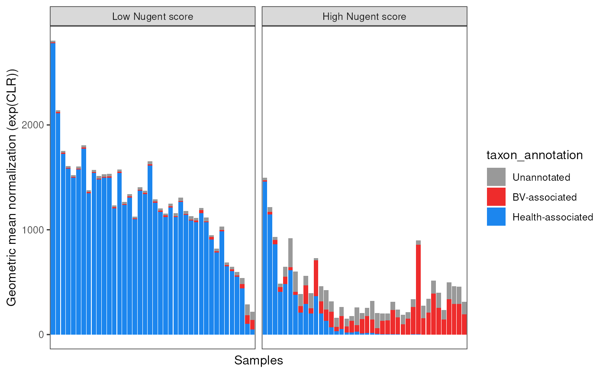
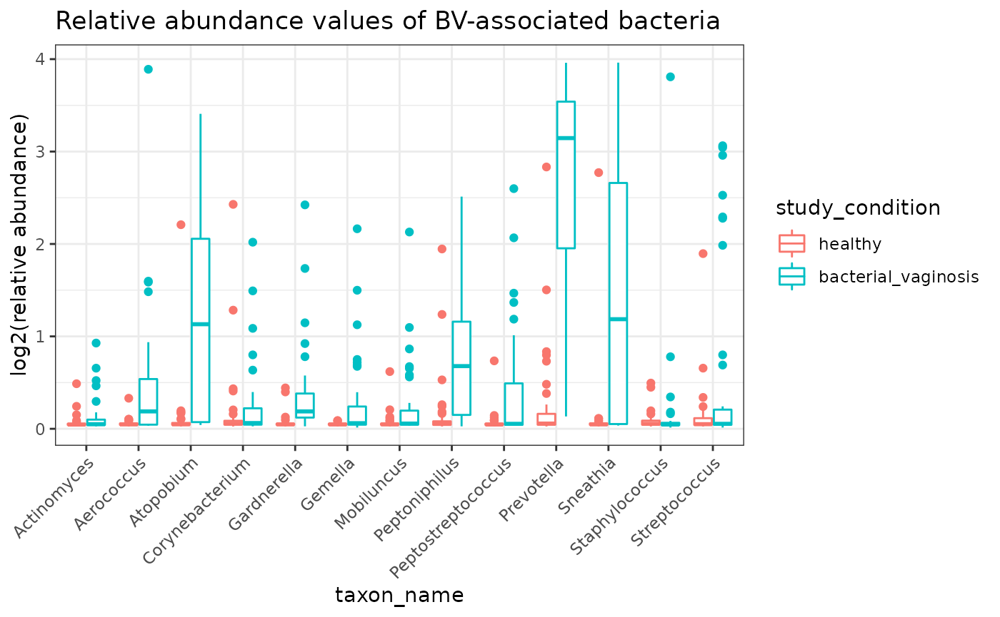
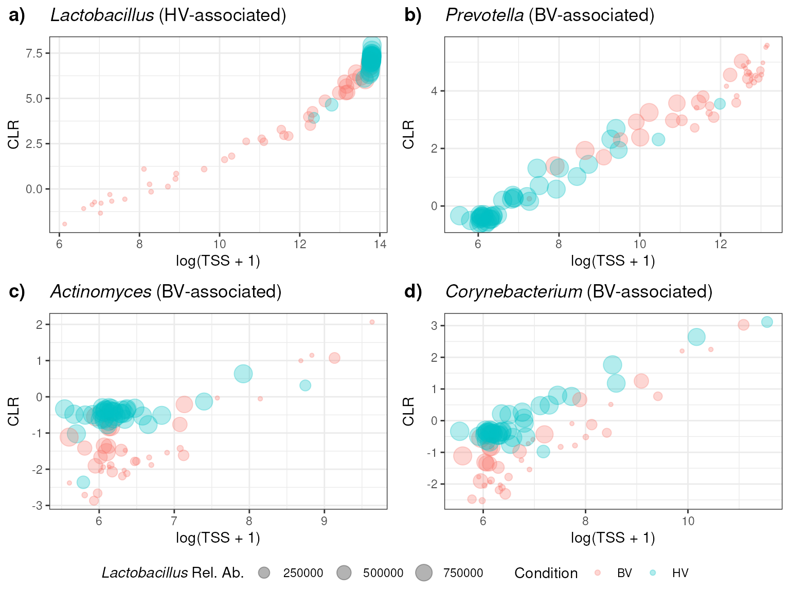
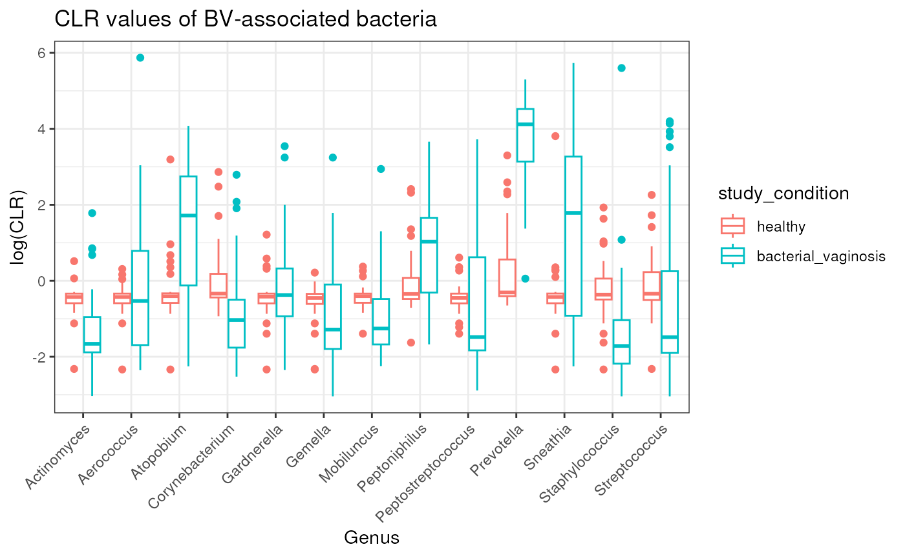

Ravel_2011_16S_BV - Bacterial vaginosis
Source:vignettes/articles/Ravel_2011_16S_BV.Rmd
Ravel_2011_16S_BV.Rmd
library(MicrobiomeBenchmarkDataAnalyses)
library(MicrobiomeBenchmarkData)
library(mia)
library(phyloseq)
library(dplyr)
library(benchdamic)
library(purrr)
library(ggplot2)
library(gridExtra)
library(tidySummarizedExperiment)Data
Import, summarize by genus, and filter
dat_name <- 'Ravel_2011_16S_BV'
conditions_col <- 'study_condition'
conditions <- c(condB = 'healthy', condA = 'bacterial_vaginosis')
tse <- getBenchmarkData(dat_name, dryrun = FALSE)[[1]]
## Select equal number of samples per ethnicity group
col_data <- as.data.frame(colData(tse)) |>
dplyr::filter(study_condition %in% conditions)
row_names_list <- col_data |>
{\(y) split(y, factor(y$ethnicity))}() |>
{\(y) map(y, ~split(.x, .x$study_condition))}() |>
unlist(recursive = FALSE) |>
map(rownames)
min_n <- row_names_list |>
map_int(length) |>
min()
set.seed(4567)
select_samples <- row_names_list |>
{\(y) map(y, ~ sample(.x, min_n, replace = FALSE))}() |>
unlist(use.names = FALSE)
tse_subset <- tse[, select_samples]
## Summarize by genus
tse_genus <- agglomerateByRank(tse_subset, rank = 'genus', na.rm = FALSE)
tse_genus <- filterTaxa(tse_genus, min_ab = 1, min_per = 0.2)
rownames(tse_genus) <- editMiaTaxaNames(tse_genus)
## Get the right order of study conditions
colData(tse_genus)$study_condition <-
factor(colData(tse_genus)$study_condition, levels = conditions)
tse_genus## class: TreeSummarizedExperiment
## dim: 32 80
## metadata(1): agglomerated_by_rank
## assays(1): counts
## rownames(32): genus:Lactobacillus genus:Prevotella ...
## genus:Anaeroglobus genus:Bulleidia
## rowData names(7): kingdom class ... species taxon_annotation
## colnames(80): S250 S383 ... S325 S276
## colData names(17): dataset gender ... nugent_score_category
## community_group
## reducedDimNames(0):
## mainExpName: NULL
## altExpNames(0):
## rowLinks: NULL
## rowTree: NULL
## colLinks: NULL
## colTree: NULLGet prior info
This is the biological information about the taxa
prior_info <- as.data.frame(rowData(tse_genus)[, c('genus', 'taxon_annotation')])
prior_info <- rename(prior_info, taxon_name = genus)
prior_info <- prior_info |>
mutate(
taxon_annotation = ifelse(
is.na(taxon_annotation), 'Unannotated', taxon_annotation
)
)
head(prior_info)## taxon_name taxon_annotation
## genus:Lactobacillus Lactobacillus hv-associated
## genus:Prevotella Prevotella bv-associated
## genus:Megasphaera Megasphaera Unannotated
## genus:Sneathia Sneathia bv-associated
## genus:Atopobium Atopobium bv-associated
## genus:Streptococcus Streptococcus bv-associatedConvert to phyloseq
ps <- makePhyloseqFromTreeSummarizedExperiment(tse_genus)
sample_data(ps)[[conditions_col]] <-
factor(sample_data(ps)[[conditions_col]], levels = conditions)
ps## phyloseq-class experiment-level object
## otu_table() OTU Table: [ 32 taxa and 80 samples ]
## sample_data() Sample Data: [ 80 samples by 17 sample variables ]
## tax_table() Taxonomy Table: [ 32 taxa by 6 taxonomic ranks ]Benchdamic workflow
This sections mostly follows the benchdamic workflow. This includes new DA methods added to the original workflow and modified plots.
Run differential abundance analysis
DA analysis:
ps <- runNormalizations(set_norm_list(), ps, verbose = FALSE)
zw <- weights_ZINB(ps, design = conditions_col)
DA_methods <- set_DA_methods_list(conditions_col, conditions)
## ALDEX2 throws an error, so remove it
DA_methods <- DA_methods[!names(DA_methods) == 'DA_ALDEx2.1']
## run methods
DA_output <- runDA(DA_methods, ps, weights = zw, verbose = FALSE) Enrichment
Get direction
direction <- get_direction_cols(DA_output, conditions_col, conditions)Create enrichment. Threshold values is based on adjusted p-values
enrichment <- createEnrichment(
object = DA_output,
priorKnowledge = prior_info,
enrichmentCol = "taxon_annotation",
namesCol = "taxon_name",
slot = "pValMat", colName = "adjP", type = "pvalue",
direction = direction,
threshold_pvalue = 0.1,
threshold_logfc = 0,
top = NULL,
alternative = "greater",
verbose = FALSE
)Create enrichment plot
enrich_plot <- plot_enrichment(
enrichment = enrichment,
enrichment_col = "taxon_annotation",
levels_to_plot = c("hv-associated", "bv-associated"),
conditions = c(condB = "HV", condA = "BV")
)
enrich_plot <- enrich_plot +
labs(y = 'Number of genera')
enrich_plot
Plot putative true positves and true negatives ratio
Create ‘positives’ object. No thresholds were added.
positives <- createPositives(
object = DA_output,
priorKnowledge = prior_info,
enrichmentCol = "taxon_annotation", namesCol = "taxon_name",
slot = "pValMat", colName = "adjP", type = "pvalue",
direction = direction,
threshold_pvalue = 1,
threshold_logfc = 0,
top = seq.int(from = 0, to = 20, by = 2),
alternative = "greater",
verbose = FALSE,
TP = list(c("DOWN Abundant", "hv-associated"), c("UP Abundant", "bv-associated")),
FP = list(c("DOWN Abundant", "bv-associated"), c("UP Abundant", "hv-associated"))
) |>
left_join(get_meth_class(), by = 'method') |>
relocate(method_class)Create putative positives plot
plots <- plot_positives(positives)
grid.arrange(grobs = plots, ncol = 3)
Perform DA with lefse, Wilcox, and ZINQ-Cauchy manually
## Relative abundance (TSS - total sum scaling)
assay(tse_genus, 'TSS') <- apply(assay(tse_genus), 2, function(x) {
(x + 1) / sum(x + 1) * 100
})
## CLR transform
assay(tse_genus, 'CLR') <- apply(assay(tse_genus), 2, function(x) {
(x + 1) / exp(mean(log(x + 1)))
# log((x + 1) / exp(mean(log(x + 1))))
})
## Relative abundance + CLR transform
assay(tse_genus, 'TSS + CLR') <- apply(assay(tse_genus, 'TSS'), 2, function(x) {
x / exp(mean(log(x)))
# log(x / exp(mean(log(x))))
})
data <- tidySummarizedExperiment::as_tibble(tse_genus) |>
rename(taxon_name = .feature, sample = .sample) |>
mutate(
taxon_annotation = ifelse(
is.na(taxon_annotation), 'Unannotated', taxon_annotation
)
)
head(data)## # A tibble: 6 × 30
## taxon_n…¹ sample counts TSS CLR TSS +…² dataset gender body_…³ ncbi_…⁴
## <chr> <chr> <dbl> <dbl> <dbl> <dbl> <chr> <chr> <chr> <chr>
## 1 genus:La… S250 565 30.6 129. 129. Ravel_… female vagina SRR062…
## 2 genus:Pr… S250 194 10.6 44.6 44.6 Ravel_… female vagina SRR062…
## 3 genus:Me… S250 677 36.7 155. 155. Ravel_… female vagina SRR062…
## 4 genus:Sn… S250 24 1.35 5.72 5.72 Ravel_… female vagina SRR062…
## 5 genus:At… S250 227 12.3 52.1 52.1 Ravel_… female vagina SRR062…
## 6 genus:St… S250 0 0.0541 0.229 0.229 Ravel_… female vagina SRR062…
## # … with 20 more variables: library_size <dbl>, sequencing_platform <chr>,
## # pmid <dbl>, study_condition <fct>, sequencing_method <chr>,
## # variable_region_16s <chr>, country <chr>, number_bases <dbl>,
## # ethnicity <chr>, ph <dbl>, nugent_score <dbl>, nugent_score_category <chr>,
## # community_group <chr>, kingdom <chr>, class <chr>, order <chr>,
## # family <chr>, genus <chr>, species <chr>, taxon_annotation <chr>, and
## # abbreviated variable names ¹taxon_name, ²`TSS + CLR`, ³body_site, …
## # ℹ Use `colnames()` to see all variable namesWilcox
Define function:
calcWilcox <- function(dat, val_col, log = FALSE) {
## Separate components
taxa <- split(dat, factor(dat$taxon_name))
taxa_names <- names(taxa)
taxa_annotations <-
dplyr::distinct(dplyr::select(data, dplyr::starts_with('taxon')))
## Perform Wilcoxon test
pvalues <- vector('double', length(taxa))
names(pvalues) <- taxa_names
formula_chr <- paste0(val_col, ' ~ study_condition')
for (i in seq_along(pvalues)) {
df <- taxa[[i]]
res <- stats::wilcox.test(formula = as.formula(formula_chr), data = df)
pvalues[[i]] <- res$p.value
}
## Adjust P-values
adj_pvalues <- stats::p.adjust(pvalues, method = 'fdr')
## Calculate fold change
log_fold_change <- vector('double', length(taxa))
for (i in seq_along(log_fold_change)) {
df <- taxa[[i]]
healthy <- df |>
dplyr::filter(study_condition == 'healthy') |>
{\(y) y[[val_col]]}()
bv <- df |>
dplyr::filter(study_condition == 'bacterial_vaginosis') |>
{\(y) y[[val_col]]}()
if (log) { # If log, revert with exp
healthy <- mean(exp(healthy))
bv <- mean(exp(bv))
} else{
healthy <- mean(healthy)
bv <- mean(bv)
}
if (bv >= healthy) { # control is healthy, condition of interest is bv
log_fold_change[i] <- log2(bv / healthy)
} else if (bv < healthy) {
log_fold_change[i] <- -log2(healthy / bv)
}
}
## Combine results and annotations
pval_results <- data.frame(
taxon_name = taxa_names,
rawP = pvalues,
adjP = adj_pvalues,
logFC = log_fold_change
)
dplyr::left_join(pval_results, taxa_annotations, by = 'taxon_name')
}Perform statistical test:
wilcox <- list(
wilcox_counts = calcWilcox(data, 'counts'),
wilcox_relab = calcWilcox(data, 'TSS'),
wilcox_clr = calcWilcox(data, 'CLR'),
wilcox_relab_clr = calcWilcox(data, 'TSS + CLR')
) |>
bind_rows(.id = 'method')Filter DA taxa
wilcox_DA <- wilcox |>
dplyr::filter(adjP <= 0.1, abs(logFC) > 0) |>
mutate(DA = ifelse(logFC > 0, "OA", "UA"))Plot
wilcox_DA |>
dplyr::filter(taxon_annotation != 'Unannotated') |>
count(method, taxon_annotation, DA) |>
mutate(n = ifelse(DA == 'UA', -n, n)) |>
mutate(method = sub('wilcox_', '', method)) |>
ggplot(aes(method, n)) +
geom_col(aes(fill = taxon_annotation), position = 'dodge') +
geom_hline(yintercept = 0) +
labs(
title = 'Wilcoxon test',
y = 'Number of DA taxa', x = 'Transformation method'
) +
scale_y_continuous(limits = c(-3, 11), breaks = seq(-3, 11, 2))
Plot the abundances of the taxa that were incorrect
incorrect_taxa_wilcox_clr <- wilcox_DA |>
dplyr::filter(
method == 'wilcox_clr', DA == 'UA',
taxon_annotation == 'bv-associated'
) |>
pull(taxon_name)
incorrect_taxa_wilcox_clr## [1] "genus:Actinomyces" "genus:Corynebacterium"Let’s plot their values for each matrix
transformations <- c('counts', 'TSS', 'CLR', 'TSS + CLR')
l1 <- vector('list', length(transformations))
names(l1) <- transformations
for (i in seq_along(transformations)) {
mat <- assay(tse_genus, transformations[i])
l1[[i]] <- mat[incorrect_taxa_wilcox_clr,] |>
as.data.frame() |>
tibble::rownames_to_column(var = 'taxon_name') |>
as_tibble()
}
wilcox_raw <- bind_rows(l1, .id = 'transformation') |>
{\(y) pivot_longer(
y, cols = 3:ncol(y), values_to = 'value', names_to = 'sample'
)}() |>
left_join(data[,c('sample', 'study_condition')], by = 'sample')
head(wilcox_raw)## # A tibble: 6 × 5
## transformation taxon_name sample value study_condition
## <chr> <chr> <chr> <dbl> <fct>
## 1 counts genus:Actinomyces S250 0 bacterial_vaginosis
## 2 counts genus:Actinomyces S250 0 bacterial_vaginosis
## 3 counts genus:Actinomyces S250 0 bacterial_vaginosis
## 4 counts genus:Actinomyces S250 0 bacterial_vaginosis
## 5 counts genus:Actinomyces S250 0 bacterial_vaginosis
## 6 counts genus:Actinomyces S250 0 bacterial_vaginosisBox plot of incorrect values:
wilcox_genus_plot <- wilcox_raw |>
mutate(taxon_name = sub('genus:', '', taxon_name)) |>
mutate(value = log(value + 1)) |>
mutate(transformation = factor(
transformation, levels = c('counts', 'TSS', 'CLR', 'TSS + CLR' ),
labels = c('Counts', 'Relative abundance', 'CLR', 'Relative abundace + CLR')
)) |>
mutate(study_condition = factor(
study_condition, levels = c('healthy', 'bacterial_vaginosis'),
labels = c('HV', 'BV')
)) |>
ggplot(aes(taxon_name, value)) +
geom_boxplot(aes(color = study_condition)) +
facet_wrap(~ transformation, scales = 'free') +
labs(
y = 'log2(Abundance values)', x = 'Genus'
) +
scale_color_manual(
values = c('dodgerblue1', 'firebrick1')
) +
theme_bw() +
theme(
panel.grid.major.x = element_blank(),
legend.title = element_blank()
)
wilcox_genus_plot
stats <- data |>
mutate(taxon_name = sub('genus:', '', taxon_name)) |>
filter(taxon_name %in% c('Actinomyces', 'Corynebacterium')) |>
group_by(study_condition, taxon_name) |>
summarise(
mean_counts = mean(counts),
sd_counts = sd(counts),
median_counts = median(counts),
mean_TSS = mean(TSS),
sd_TSS = sd(TSS),
median_TSS = median(TSS),
mean_CLR = mean(CLR),
sd_CLR = sd(CLR),
median_CLR = median(CLR),
mean_TSS_CLR = mean(`TSS + CLR`),
sd_TSS_CLR = sd(`TSS + CLR`),
median_TSS_CLR = median(`TSS + CLR`)
) |>
ungroup()
knitr::kable(stats)| study_condition | taxon_name | mean_counts | sd_counts | median_counts | mean_TSS | sd_TSS | median_TSS | mean_CLR | sd_CLR | median_CLR | mean_TSS_CLR | sd_TSS_CLR | median_TSS_CLR |
|---|---|---|---|---|---|---|---|---|---|---|---|---|---|
| healthy | Actinomyces | 0.375 | 1.659279 | 0 | 0.0714255 | 0.0995137 | 0.0467832 | 0.6665486 | 0.2630576 | 0.6366870 | 0.6665486 | 0.2630576 | 0.6366870 |
| healthy | Corynebacterium | 6.525 | 29.117787 | 0 | 0.4129741 | 1.6621998 | 0.0570684 | 1.9094377 | 4.0385754 | 0.6989058 | 1.9094377 | 4.0385754 | 0.6989058 |
| bacterial_vaginosis | Actinomyces | 2.775 | 7.780605 | 0 | 0.1561345 | 0.2926584 | 0.0510601 | 0.6624157 | 1.3870388 | 0.2151677 | 0.6624157 | 1.3870388 | 0.2151677 |
| bacterial_vaginosis | Corynebacterium | 9.450 | 26.302920 | 0 | 0.4532002 | 1.1707888 | 0.0641685 | 1.4907332 | 3.7046814 | 0.4007289 | 1.4907332 | 3.7046814 | 0.4007289 |
wilcox |>
mutate(
sig = ifelse(adjP <= 0.1, '*', '')
) |>
mutate(sig2 = paste0(round(logFC, 2), ' ', sig)) |>
mutate(taxon_name = sub('genus:', '', taxon_name)) |>
mutate(taxon_name = as.factor(taxon_name)) |>
filter(taxon_name %in% c('Actinomyces', 'Corynebacterium')) |>
ggplot(aes(taxon_name, logFC)) +
geom_col(aes(fill = method), position = position_dodge(width = 0.9)) +
geom_text(
aes(label = sig2, group = method),
position = position_dodge(width = 0.9), vjust = -0.5
) +
labs(
title = 'LogFC of taxa identified as significant (adjP <= 0.1) by CLR',
subtitle = 'logFC is indicated on top of bars. * means significant'
)
Lefse
Define a function for running Lefse:
calcLefse <- function(dat, assay) {
res <- lefser2(
dat, kruskal.threshold = 0.05, wilcox.threshold = 0.05,
lda.threshold = 0, groupCol = 'study_condition', assay = assay
)
adj_pvalues <- p.adjust(res$kw_pvalues)
dplyr::mutate(res, rawP = kw_pvalues, adjP = adj_pvalues)
# res <- lefser2(
# dat, kruskal.threshold = 0.05, wilcox.threshold = 0.05,
# lda.threshold = 0, groupCol = 'study_condition', assay = assay ,
# log = log
# )
## Add some made up rawP and adjP
# res |>
# dplyr::mutate(
# rawP = kw_pvalues,
# adjP = stats::p.adjust(rawP, method = 'fdr')
# )
}Run lefse
taxa_annotations <-
dplyr::distinct(dplyr::select(data, dplyr::starts_with('taxon')))
lefse <- list(
lefse_counts = calcLefse(tse_genus, 'counts'),
lefse_relab = calcLefse(tse_genus, 'TSS'),
lefse_clr = calcLefse(tse_genus, 'CLR'),
lefse_relab_clr = calcLefse(tse_genus, 'TSS + CLR')
) |>
bind_rows(.id = 'method') |>
mutate(
DA = ifelse(scores > 0, 'OA', 'UA')
) |>
rename(taxon_name = 'Names') |>
left_join(taxa_annotations, by = 'taxon_name')
head(lefse)## method taxon_name scores kw_pvalues rawP
## 1 lefse_counts family:Lachnospiraceae 1.8759279 9.489438e-05 9.489438e-05
## 2 lefse_counts family:Oscillospiraceae 1.3801485 1.737376e-06 1.737376e-06
## 3 lefse_counts family:Prevotellaceae 0.8781151 1.826334e-08 1.826334e-08
## 4 lefse_counts genus:Actinomyces 0.5753518 2.016389e-03 2.016389e-03
## 5 lefse_counts genus:Aerococcus 1.4925514 7.902396e-07 7.902396e-07
## 6 lefse_counts genus:Anaerococcus 1.4981005 1.849079e-07 1.849079e-07
## adjP DA taxon_annotation
## 1 8.540494e-04 OA Unannotated
## 2 2.432326e-05 OA Unannotated
## 3 3.835301e-07 OA Unannotated
## 4 4.322222e-03 OA bv-associated
## 5 1.185359e-05 OA bv-associated
## 6 2.958526e-06 OA Unannotated
lefse_DA <- lefse |>
dplyr::filter(adjP <= 0.1, abs(scores) > 0) |>
mutate(DA = ifelse(scores > 0, "OA", "UA"))Plot lefse results:
lefse_DA |>
dplyr::filter(taxon_annotation != 'Unannotated') |>
count(method, taxon_annotation, DA) |>
mutate(n = ifelse(DA == 'UA', -n, n)) |>
mutate(method = sub('lefse_', '', method)) |>
ggplot(aes(method, n)) +
geom_col(aes(fill = taxon_annotation), position = 'dodge') +
geom_hline(yintercept = 0) +
labs(
title = 'LEfSe test',
y = 'Number of DA taxa', x = 'Transformation method'
) +
scale_y_continuous(limits = c(-3, 11), breaks = seq(-3, 11, 2))
incorrect_taxa_lefse_clr <- lefse_DA |>
dplyr::filter(
method %in% c('lefse_clr', 'lefse_relab_clr'), DA == 'UA',
taxon_annotation == 'bv-associated'
) |>
pull(taxon_name) |>
unique()
incorrect_taxa_lefse_clr ## the same as in wilcox.## [1] "genus:Corynebacterium"ZINQ
calcZINQ <- function(dat, val_col, y_Cord = 'D', log = FALSE) {
taxa <- split(dat, dat$taxon_name)
taxa_names <- names(taxa)
taxa_annotations <-
dplyr::distinct(dplyr::select(dat, dplyr::starts_with('taxon')))
pvalues <- vector('double', length(taxa))
names(pvalues) <- taxa_names
form <- paste0(val_col, ' ~ study_condition')
for (i in seq_along(pvalues)) {
df <- taxa[[i]]
res <- tryCatch(
error = function(e) NULL, {
ZINQ::ZINQ_tests(
formula.logistic = as.formula(form),
formula.quantile = as.formula(form),
C = 'study_condition', y_CorD = y_Cord, data = df
)
}
)
if (is.null(res)) {
pvalues[i] <- NA
} else {
pvalues[i] <- ZINQ::ZINQ_combination(res, method = 'Cauchy')
}
}
adj_pvalues <- p.adjust(pvalues, method = 'fdr')
log_fold_change <- vector('double', length(taxa))
for (i in seq_along(log_fold_change)) {
df <- taxa[[i]]
healthy <- df |>
dplyr::filter(study_condition == 'healthy') |>
{\(y) y[[val_col]]}()
bv <- df |>
dplyr::filter(study_condition == 'bacterial_vaginosis') |>
{\(y) y[[val_col]]}()
if (log) { # If log, revert with exp
healthy <- mean(exp(healthy))
bv <- mean(exp(bv))
} else{
healthy <- mean(healthy)
bv <- mean(bv)
}
if (bv >= healthy) { # control is healthy, condition of interest is bv
log_fold_change[i] <- log2(bv / healthy)
} else if (bv < healthy) {
log_fold_change[i] <- -log2(healthy / bv)
}
}
## Combine results and annotations
output <- data.frame(
taxon_name = taxa_names,
rawP = pvalues,
adjP = adj_pvalues,
logFC = log_fold_change
)
return(output)
# dplyr::left_join(output, taxa_annotations, by = 'taxon_name')
}Run ZINQ
zinq <- list(
zinq_counts = calcZINQ(data, 'counts', y_Cord = 'D'),
zinq_relab = calcZINQ(data, 'TSS', y_Cord = 'C'),
zinq_clr = calcZINQ(data, 'CLR', y_Cord = 'C'),
zinq_relab_clr = calcZINQ(data, 'TSS + CLR', y_Cord = 'C')
) |>
bind_rows(.id = 'method') |>
mutate(
DA = ifelse(logFC > 0, 'OA', 'UA')
) |>
left_join(taxa_annotations, by = 'taxon_name')
zinq_DA <- zinq |>
dplyr::filter(adjP <= 0.1, abs(logFC) > 0) |>
mutate(DA = ifelse(logFC > 0, "OA", "UA"))Plot ZINQ results
zinq_plot <- zinq_DA |>
dplyr::filter(taxon_annotation != 'Unannotated') |>
count(method, taxon_annotation, DA) |>
mutate(n = ifelse(DA == 'UA', -n, n)) |>
mutate(method = sub('lefse_', '', method)) |>
ggplot(aes(method, n)) +
geom_col(aes(fill = taxon_annotation), position = 'dodge') +
geom_hline(yintercept = 0) +
labs(
title = 'ZINQ test',
y = 'Number of DA taxa', x = 'Transformation method'
) +
scale_y_continuous(limits = c(-3, 13), breaks = seq(-3, 13, 2))
zinq_plot
incorrect_taxa_lefse_clr <- zinq_DA |>
dplyr::filter(
method %in% c('zinq_clr', 'zinq_relab_clr'), DA == 'UA',
taxon_annotation == 'bv-associated'
) |>
pull(taxon_name) |>
unique()
incorrect_taxa_lefse_clr ## the same as in wilcox.## [1] "genus:Actinomyces" "genus:Corynebacterium"ANCOM-BC, MetagenomeSeq, and DESEQ2
ANCOM-BC
ancombc <- as.data.frame(DA_output$ancombc.none$statInfo)
ancombc$taxon_name <- rownames(ancombc)
ancombc <- left_join(ancombc, taxa_annotations, by = "taxon_name") |>
relocate(taxon_name, taxon_annotation)
ancombc |>
filter(q_val <= 0.1, lfc < 0, taxon_annotation == 'bv-associated') |>
pull(taxon_name)## [1] "genus:Staphylococcus" "genus:Corynebacterium" "genus:Actinomyces"MetagenomeSeq
metagenomeseq <- as.data.frame(DA_output$metagenomeSeq.CSSmedian$statInfo)
metagenomeseq$taxon_name <- rownames(metagenomeseq)
metagenomeseq <- left_join(metagenomeseq, taxa_annotations, by = "taxon_name") |>
relocate(taxon_name, taxon_annotation)
metagenomeseq |>
filter(
adjPvalues <= 0.1, study_conditionbacterial_vaginosis < 0,
taxon_annotation == 'bv-associated'
) |>
pull(taxon_name)## [1] "genus:Corynebacterium"DESEQ2
deseq <- as.data.frame(DA_output$DESeq2.poscounts$statInfo)
deseq$taxon_name <- rownames(deseq)
deseq <- left_join(deseq, taxa_annotations, by = "taxon_name") |>
relocate(taxon_name, taxon_annotation)
deseq |>
filter(
padj <= 0.1, log2FoldChange < 0,
taxon_annotation == 'bv-associated'
) |>
pull(taxon_name)## [1] "genus:Staphylococcus"Plots of BV-associated genera
These are all of the BV-associated bacteria present in the Ravel_2011 dataset. This is independent of any statistical test or effect size calculation.
CLR
data |>
filter(taxon_annotation == 'bv-associated') |>
mutate(taxon_name = sub("^genus:", "", taxon_name)) |>
mutate(CLR = log(CLR + 1)) |>
ggplot(aes(taxon_name, CLR)) +
geom_boxplot(aes(color = study_condition)) +
labs(
title = 'CLR values of BV-associated bacteria',
x = 'Genus', y = 'log(CLR)'
) +
theme_bw() +
theme(
axis.text.x = element_text(angle = 45, hjust = 1)
)
Relative abundance
data |>
filter(taxon_annotation == 'bv-associated') |>
mutate(taxon_name = sub("^genus:", "", taxon_name)) |>
mutate(TSS = log(TSS + 1)) |>
ggplot(aes(taxon_name, TSS)) +
geom_boxplot(aes(color = study_condition)) +
labs(title = 'Relative abundance values of BV-associated bacteria',
y = 'log2(relative abundance)') +
theme_bw() +
theme(
axis.text.x = element_text(angle = 45, hjust = 1)
)
Compositions with TSS data
order of taxa
first_set <- data |>
filter(
nugent_score_category == 'low',
taxon_annotation == 'hv-associated'
) |>
arrange(desc(TSS)) |>
pull(sample)
second_set <- data |>
filter(
nugent_score_category == 'high',
taxon_annotation == 'hv-associated'
) |>
arrange(desc(TSS)) |>
pull(sample)
samples_order <- c(first_set, second_set)
p1 <- data |>
mutate(
sample = factor(sample, levels = samples_order),
nugent_score_category = factor(
nugent_score_category, levels = c('low', 'high'),
labels = c('Low Nugent score', 'High Nugent score')
),
taxon_annotation = case_when(
taxon_annotation == "hv-associated" ~ "Health-associated",
taxon_annotation == "bv-associated" ~ "BV-associated",
TRUE ~ taxon_annotation
),
taxon_annotation = factor(
taxon_annotation, levels = c('Health-associated', 'BV-associated', 'Unannotated')[3:1]
)
) |>
ggplot(aes(sample, TSS )) +
geom_col(aes(fill = taxon_annotation)) +
scale_fill_manual(values = c('gray60', 'firebrick2', 'dodgerblue2')) +
labs(
x = "Samples",
y = "Relative abundance values (TSS)"
) +
facet_wrap(~nugent_score_category, ncol = 2, scales = "free_x") +
theme_bw() +
theme(
axis.text.x = element_blank(),
axis.ticks.x = element_blank(),
panel.grid = element_blank()
)
p1
p2 <- data |>
mutate(
sample = factor(sample, levels = samples_order),
nugent_score_category = factor(
nugent_score_category, levels = c('low', 'high'),
labels = c('Low Nugent score', 'High Nugent score')
),
taxon_annotation = case_when(
taxon_annotation == "hv-associated" ~ "Health-associated",
taxon_annotation == "bv-associated" ~ "BV-associated",
TRUE ~ taxon_annotation
),
taxon_annotation = factor(
taxon_annotation, levels = c('Health-associated', 'BV-associated', 'Unannotated')[3:1]
)
) |>
ggplot(aes(sample, CLR )) +
geom_col(aes(fill = taxon_annotation)) +
scale_fill_manual(values = c('gray60', 'firebrick2', 'dodgerblue2')) +
labs(
x = "Samples",
y = "CLR transformed values"
) +
facet_wrap(~nugent_score_category, ncol = 2, scales = "free_x") +
theme_bw() +
theme(
axis.text.x = element_blank(),
axis.ticks.x = element_blank(),
panel.grid = element_blank()
)
p2
## R version 4.2.1 (2022-06-23)
## Platform: x86_64-pc-linux-gnu (64-bit)
## Running under: Ubuntu 20.04.4 LTS
##
## Matrix products: default
## BLAS: /usr/lib/x86_64-linux-gnu/blas/libblas.so.3.9.0
## LAPACK: /usr/lib/x86_64-linux-gnu/lapack/liblapack.so.3.9.0
##
## locale:
## [1] LC_CTYPE=en_US.UTF-8 LC_NUMERIC=C
## [3] LC_TIME=en_US.UTF-8 LC_COLLATE=en_US.UTF-8
## [5] LC_MONETARY=en_US.UTF-8 LC_MESSAGES=en_US.UTF-8
## [7] LC_PAPER=en_US.UTF-8 LC_NAME=C
## [9] LC_ADDRESS=C LC_TELEPHONE=C
## [11] LC_MEASUREMENT=en_US.UTF-8 LC_IDENTIFICATION=C
##
## attached base packages:
## [1] stats4 stats graphics grDevices utils datasets methods
## [8] base
##
## other attached packages:
## [1] tidySummarizedExperiment_1.6.1
## [2] gridExtra_2.3
## [3] ggplot2_3.3.6
## [4] purrr_0.3.4
## [5] benchdamic_1.3.1
## [6] dplyr_1.0.9
## [7] phyloseq_1.40.0
## [8] mia_1.4.0
## [9] MultiAssayExperiment_1.22.0
## [10] MicrobiomeBenchmarkData_0.99.0
## [11] TreeSummarizedExperiment_2.4.0
## [12] Biostrings_2.64.0
## [13] XVector_0.36.0
## [14] SingleCellExperiment_1.18.0
## [15] SummarizedExperiment_1.26.1
## [16] Biobase_2.56.0
## [17] GenomicRanges_1.48.0
## [18] GenomeInfoDb_1.32.3
## [19] IRanges_2.30.0
## [20] S4Vectors_0.34.0
## [21] BiocGenerics_0.42.0
## [22] MatrixGenerics_1.8.1
## [23] matrixStats_0.62.0
## [24] MicrobiomeBenchmarkDataAnalyses_0.0.0.9000
##
## loaded via a namespace (and not attached):
## [1] softImpute_1.4-1 pbapply_1.5-0
## [3] lattice_0.20-45 vctrs_0.4.1
## [5] expm_0.999-6 mgcv_1.8-40
## [7] beanplot_1.3.1 blob_1.2.3
## [9] survival_3.4-0 nloptr_2.0.3
## [11] spatstat.data_2.2-0 later_1.3.0
## [13] DBI_1.1.3 rappdirs_0.3.3
## [15] uwot_0.1.11 jpeg_0.1-9
## [17] zlibbioc_1.42.0 MatrixModels_0.5-0
## [19] rgeos_0.5-9 htmlwidgets_1.5.4
## [21] mvtnorm_1.1-3 future_1.27.0
## [23] leiden_0.4.2 ANCOMBC_1.6.2
## [25] parallel_4.2.1 scater_1.24.0
## [27] irlba_2.3.5 illuminaio_0.38.0
## [29] Rcpp_1.0.9 readr_2.1.2
## [31] KernSmooth_2.23-20 promises_1.2.0.1
## [33] DelayedArray_0.22.0 methylumi_2.42.0
## [35] limma_3.52.2 vegan_2.6-2
## [37] Hmisc_4.7-1 fs_1.5.2
## [39] textshaping_0.3.6 digest_0.6.29
## [41] png_0.1-7 nor1mix_1.3-0
## [43] sctransform_0.3.3 cowplot_1.1.1
## [45] nleqslv_3.3.3 glmnet_4.1-4
## [47] pkgconfig_2.0.3 spatstat.random_2.2-0
## [49] DelayedMatrixStats_1.18.0 ggbeeswarm_0.6.0
## [51] iterators_1.0.14 reticulate_1.25
## [53] ffpe_1.40.0 beeswarm_0.4.0
## [55] modeltools_0.2-23 xfun_0.32
## [57] bslib_0.4.0 zoo_1.8-10
## [59] tidyselect_1.1.2 reshape2_1.4.4
## [61] ica_1.0-3 viridisLite_0.4.0
## [63] rtracklayer_1.56.1 rlang_1.0.4
## [65] jquerylib_0.1.4 glue_1.6.2
## [67] RColorBrewer_1.1-3 RcppZiggurat_0.1.6
## [69] registry_0.5-1 stringr_1.4.0
## [71] DESeq2_1.36.0 labeling_0.4.2
## [73] SparseM_1.81 httpuv_1.6.5
## [75] biomformat_1.24.0 class_7.3-20
## [77] preprocessCore_1.58.0 BiocNeighbors_1.14.0
## [79] TH.data_1.1-1 Wrench_1.14.0
## [81] annotate_1.74.0 jsonlite_1.8.0
## [83] bit_4.0.4 mime_0.12
## [85] systemfonts_1.0.4 gplots_3.1.3
## [87] Rsamtools_2.12.0 Exact_3.1
## [89] zCompositions_1.4.0-1 stringi_1.7.8
## [91] ROI_1.0-0 spatstat.sparse_2.1-1
## [93] gsl_2.1-7.1 rbibutils_2.2.9
## [95] scattermore_0.8 Rdpack_2.4
## [97] yulab.utils_0.0.5 quadprog_1.5-8
## [99] bitops_1.0-7 cli_3.3.0
## [101] rhdf5filters_1.8.0 ALDEx2_1.28.1
## [103] RSQLite_2.2.15 tidyr_1.2.0
## [105] libcoin_1.0-9 data.table_1.14.2
## [107] bumphunter_1.38.0 energy_1.7-10
## [109] rstudioapi_0.13 microbiome_1.18.0
## [111] GenomicAlignments_1.32.1 sfsmisc_1.1-13
## [113] nlme_3.1-159 locfit_1.5-9.6
## [115] listenv_0.8.0 DECIPHER_2.24.0
## [117] miniUI_0.1.1.1 NADA_1.6-1.1
## [119] dbplyr_2.2.1 readxl_1.4.0
## [121] TTR_0.24.3 lifecycle_1.0.1
## [123] cellranger_1.1.0 munsell_0.5.0
## [125] caTools_1.18.2 codetools_0.2-18
## [127] vipor_0.4.5 lmtest_0.9-40
## [129] htmlTable_2.4.1 xtable_1.8-4
## [131] ROCR_1.0-11 BiocManager_1.30.18
## [133] abind_1.4-5 farver_2.1.1
## [135] parallelly_1.32.1 RANN_2.6.1
## [137] askpass_1.1 SeuratObject_4.1.0
## [139] BiocIO_1.6.0 GEOquery_2.64.2
## [141] RcppAnnoy_0.0.19 goftest_1.2-3
## [143] patchwork_1.1.1 tibble_3.1.8
## [145] ggdendro_0.1.23 cluster_2.1.3
## [147] future.apply_1.9.0 Seurat_4.1.1
## [149] Matrix_1.4-1 tidytree_0.4.0
## [151] ellipsis_0.3.2 prettyunits_1.1.1
## [153] metagenomeSeq_1.38.0 ggridges_0.5.3
## [155] mclust_5.4.10 igraph_1.3.4
## [157] multtest_2.52.0 minfi_1.42.0
## [159] slam_0.1-50 spatstat.utils_2.3-1
## [161] htmltools_0.5.3 BiocFileCache_2.4.0
## [163] yaml_2.3.5 GenomicFeatures_1.48.3
## [165] utf8_1.2.2 plotly_4.10.0
## [167] XML_3.99-0.10 pkgdown_2.0.6
## [169] e1071_1.7-11 foreign_0.8-82
## [171] withr_2.5.0 scuttle_1.6.2
## [173] fitdistrplus_1.1-8 BiocParallel_1.30.3
## [175] bit64_4.0.5 rngtools_1.5.2
## [177] doRNG_1.8.2 rootSolve_1.8.2.3
## [179] trust_0.1-8 affyio_1.66.0
## [181] multcomp_1.4-20 foreach_1.5.2
## [183] spatstat.core_2.4-4 progressr_0.10.1
## [185] ragg_1.2.2 rsvd_1.0.5
## [187] ScaledMatrix_1.4.0 memoise_2.0.1
## [189] evaluate_0.16 VGAM_1.1-7
## [191] forcats_0.5.1 geneplotter_1.74.0
## [193] tzdb_0.3.0 permute_0.9-7
## [195] lmom_2.9 curl_4.3.2
## [197] fansi_1.0.3 highr_0.9
## [199] xts_0.12.1 ZINQ_1.0
## [201] tensor_1.5 edgeR_3.38.4
## [203] checkmate_2.1.0 cachem_1.0.6
## [205] desc_1.4.1 truncnorm_1.0-8
## [207] interp_1.1-3 detectseparation_0.2
## [209] deldir_1.0-6 corncob_0.2.0
## [211] rjson_0.2.21 ggrepel_0.9.1
## [213] lumi_2.48.0 ade4_1.7-19
## [215] rprojroot_2.0.3 tools_4.2.1
## [217] sass_0.4.2 sandwich_3.0-2
## [219] magrittr_2.0.3 RCurl_1.98-1.8
## [221] proxy_0.4-27 ape_5.6-2
## [223] xml2_1.3.3 ROI.plugin.lpsolve_1.0-1
## [225] httr_1.4.3 assertthat_0.2.1
## [227] rmarkdown_2.14 boot_1.3-28
## [229] globals_0.16.0 R6_2.5.1
## [231] Rhdf5lib_1.18.2 nnet_7.3-17
## [233] DirichletMultinomial_1.38.0 progress_1.2.2
## [235] genefilter_1.78.0 KEGGREST_1.36.3
## [237] treeio_1.20.1 gtools_3.9.3
## [239] shape_1.4.6 coin_1.4-2
## [241] beachmat_2.12.0 HDF5Array_1.24.2
## [243] BiocSingular_1.12.0 rhdf5_2.40.0
## [245] splines_4.2.1 colorspace_2.0-3
## [247] generics_0.1.3 base64enc_0.1-3
## [249] pillar_1.8.0 affy_1.74.0
## [251] sp_1.5-0 GenomeInfoDbData_1.2.8
## [253] plyr_1.8.7 gtable_0.3.0
## [255] restfulr_0.0.15 lpSolveAPI_5.5.2.0-17.8
## [257] latticeExtra_0.6-30 knitr_1.39
## [259] biomaRt_2.52.0 fastmap_1.1.0
## [261] doParallel_1.0.17 quantreg_5.94
## [263] AnnotationDbi_1.58.0 Rfast_2.0.6
## [265] backports_1.4.1 openssl_2.0.2
## [267] scales_1.2.0 filelock_1.0.2
## [269] base64_2.0 decontam_1.16.0
## [271] gld_2.6.5 hms_1.1.1
## [273] scrime_1.3.5 Rtsne_0.16
## [275] shiny_1.7.2 MGLM_0.2.1
## [277] polyclip_1.10-0 grid_4.2.1
## [279] numDeriv_2016.8-1.1 siggenes_1.70.0
## [281] DescTools_0.99.45 lazyeval_0.2.2
## [283] Formula_1.2-4 crayon_1.5.1
## [285] MASS_7.3-58.1 MAST_1.22.0
## [287] sparseMatrixStats_1.8.0 viridis_0.6.2
## [289] reshape_0.8.9 rpart_4.1.16
## [291] compiler_4.2.1 spatstat.geom_2.4-0
## [293] zinbwave_1.18.0